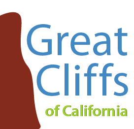

California's Greatest Cliffs
The greatest cliffs are these four cliffs located in southern California. Each of these cliffs have their own uniqueness and beauty: West Cliff, North Cliff, East Cliff and South Cliff are the pride of California. Each cliff has many amenities to offer visitors such as recreational areas, camping sites, wildlife watch spots and overnight cabins.
No matter which direction you head from Irvine, California, the sites are easily reached within a 100 mile radius. West Cliff is the most popular among Westcliff University campus students because of its close proximity.
West Cliff

North Cliff

East Cliff

South Cliff

x